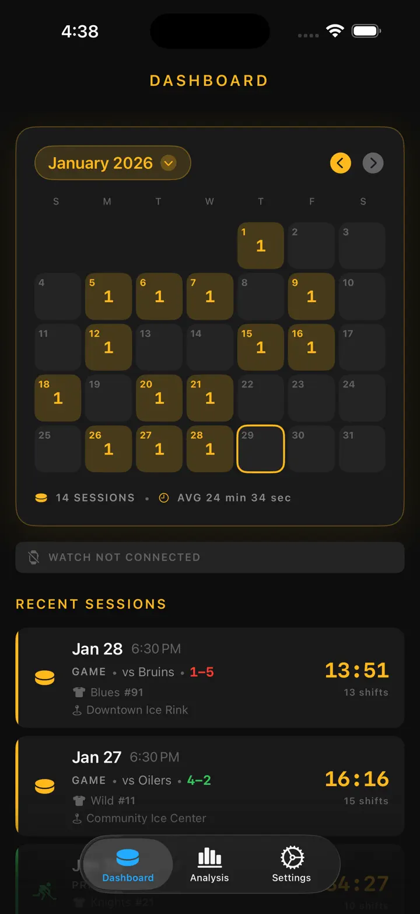

Ice Time Track
Hockey Shift Workout Tracker
Automatic ice-time tracking on Apple Watch — now with gear tracking and skate-sharpening reminders. Review your shifts, stats, and health after every game.
Download on the App Store
About the app
Your shifts. Tracked automatically.
Ice Time Track uses your Apple Watch to detect when you're skating vs. on the bench. No buttons, no hassle. Just start a session and play.
HOW IT WORKS
Our motion detection algorithm analyzes accelerometer, gyroscope, and GPS data to distinguish skating from resting. Your iPhone syncs live updates so you can review stats in real-time or after the game.
FEATURES
- Automatic shift detection, motion, health metrics tracking
- Total ice time and shift-by-shift breakdown
- In-game / post-game records logging - goal, penalty, intermission
- Heart rate and calories per shift
- Visual timeline of ice/bench pattern
- Session history with trends
- Location tagging for each rink
- Game, practice, and scrimmage modes
- Optional haptic alerts
- Export data to CSV or JSON
APPLE INTEGRATION
Works with Apple Watch. Syncs to Apple Health.
PRIVACY
All data stored locally. No accounts required.
Built by hockey players, for hockey players. Know your ice time. Elevate your game.
Ice Time Track transforms your Apple Watch into an intelligent hockey companion that knows exactly when you hit the ice and when you're on the bench. No buttons. No distractions. Just pure, automatic tracking so you can focus on playing your best.
HOW IT WORKS
Start a session on your Apple Watch and forget about it. Our advanced motion detection analyzes accelerometer, gyroscope, and GPS data in real-time to distinguish skating from resting. Your iPhone stays in sync with live updates—watch your stats climb from the stands or review everything after the final buzzer.
WHAT YOU'LL DISCOVER
- Total Ice Time — Know exactly how many minutes you spent where it counts
- Shift-by-Shift Breakdown — Every shift with duration, heart rate, and calories
- Game logs - goal / penalty by periods
- Heart Rate Tracking — Monitor effort during skating vs. recovery
- Calories Burned — Accurate data synced from Apple Health
- Session Timeline — Visual chart of your ice/bench pattern
- Location Memory — Automatically tag which rink you played at
- Historical Trends — Compare sessions and track progress over time
BUILT FOR EVERY SKATER
Whether you're logging beer league games, grinding through practice, or competing in scrimmages—Ice Time Track adapts. Tag sessions by type, add opponent names, and build your personal hockey journal.
SEAMLESS APPLE INTEGRATION
- Syncs workouts to Apple Health
- Runs in background during sessions
- Optional haptic alerts for ice/bench transitions
- Optimized for low battery impact
PRIVACY FIRST
Your data stays yours. Stored locally on your devices. No accounts. No data sold. Ever.
FROM PLAYERS, FOR PLAYERS
Built by hockey lovers tired of guessing ice time. Real numbers. Real insights. Zero friction.
Download now and never wonder about your ice time again.
Lace up. Drop the puck. We've got the rest.
Privacy Policy: https://masawata.net/privacy-policy.html Terms Of Service: https://www.apple.com/legal/internet-services/itunes/dev/stdeula/
Screenshots





Ice Time Track
Automatic ice-time tracking on Apple Watch — now with gear tracking and skate-sharpening reminders. Review your shifts, stats, and health after every game.
Download on the App Store